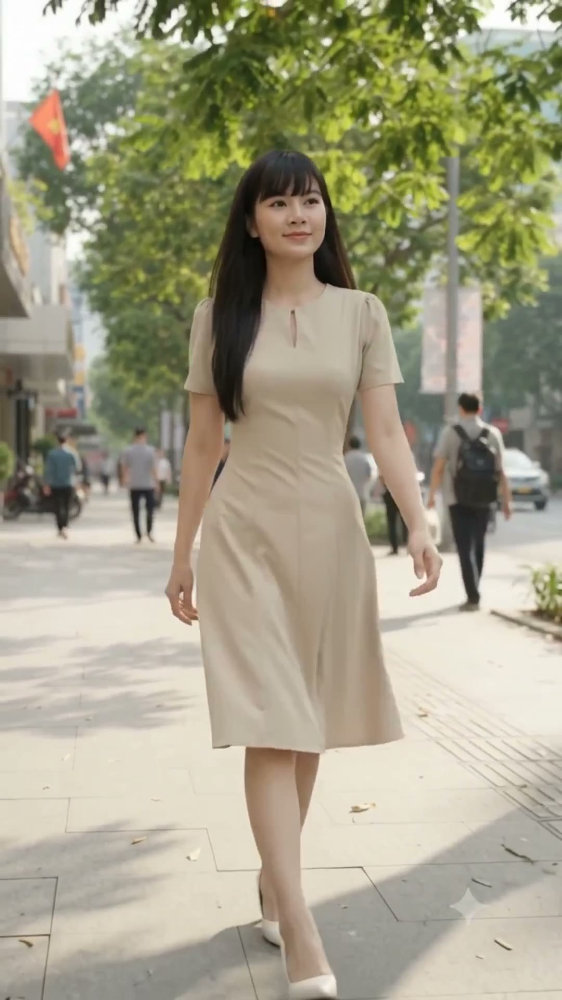
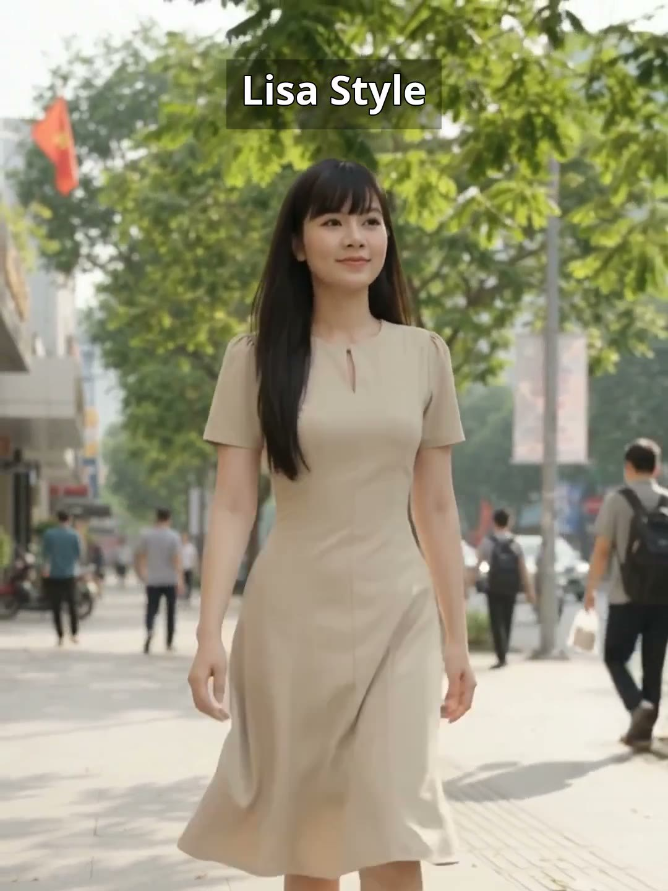
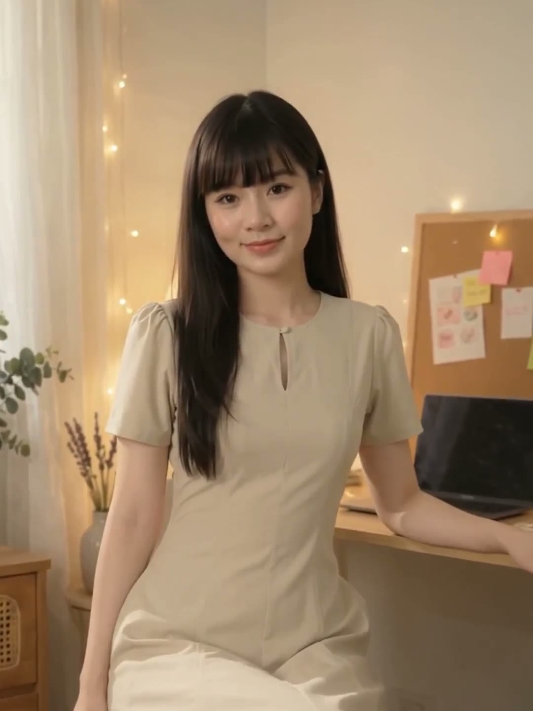
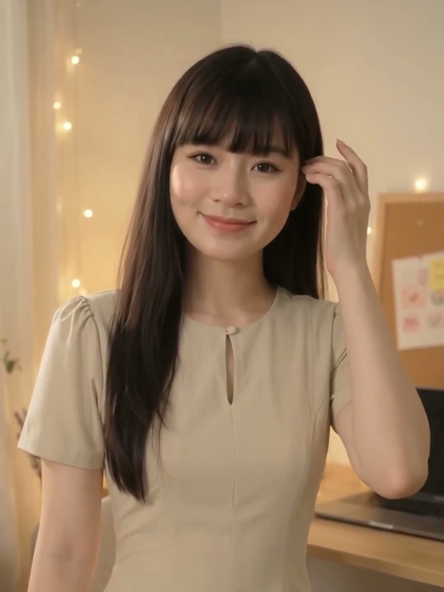

Đầm BEMINE B700 màu Be: đi làm thanh lịch, chỉ 186 nghìn

Sáng nay đi làm, Lisa chọn đầm BEMINE B700 màu Be: cổ tròn xẻ V nhỏ giữa ngực, tay ngắn phồng nhẹ ở vai, chiết eo nhẹ bằng đường may princess, chân váy chữ A xòe nhẹ dài 110cm. Vải BULLY mờ, mềm mát, không bóng — mặc cả ngày đi làm vẫn thoải mái mà nhìn vẫn gọn gàng, thanh lịch.
Đọc trước khi mua: bài viết này là gợi ý phối đồ lấy cảm hứng từ mẫu đầm công sở đang bán chạy trên Shopee. Lisa là nhân vật AI, nên bài viết không phải bài đánh giá sản phẩm Lisa đã mặc thật hay đã dùng thử. Giá, chất liệu và size cần kiểm tra lại trên trang bán trước khi mua. Link mua hàng (affiliate — mua qua link, Lisa Style có thể nhận một khoản hoa hồng nhỏ mà giá bạn trả không đổi): Đầm BEMINE B700 màu Be — 186.150đ sau voucher, đã bán 3k+, 4,9 sao/84 đánh giá, shop BEMINE - THỜI TRANG NỮ (Mall).
Cùng một chiếc đầm Be, nhìn lúc đi bộ trên phố, lúc ngồi làm việc ở văn phòng và lúc cười duyên cận mặt sẽ khác nhau — xem đủ 3 góc rồi hãy quyết có hợp với bạn không:

Đi bộ buổi sáng — dáng xòe nhẹ, chân thon dài

Ngồi văn phòng — chiết eo princess gọn dáng

Cười duyên — màu Be dịu, da sáng hẳn lên
Vì sao đầm Be hợp đi làm?
Màu Be dịu, dễ phối: màu be nhạt vừa đủ nổi bật giữa văn phòng mà không chói mắt; da sáng hay da ấm đều mặc được, phối với giày trắng hay túi đỏ rượu đều hợp.
Cổ tròn xẻ V nhỏ, điệu vừa đủ: cổ tròn có xẻ V nhỏ giữa ngực làm điểm nhấn dịu dàng, không cần vòng cổ mà vẫn không bị trống; tay ngắn phồng nhẹ che bắp tay mà vai vẫn gọn.
Chiết eo princess, không cần belt: đường may princess chiết eo nhẹ, chia tỷ lệ thân trên — thân dưới rõ ràng, dáng nhỏ mặc vào vẫn thấy eo thon, chân dài, mà không bị belt hay dây thắt làm rối.
Váy chữ A dài 110cm, che khuyết điểm: chân váy chữ A xòe nhẹ, trơn không xếp ly, dài 110cm vừa qua gối — che bụng và đùi, ngồi làm việc cả buổi vẫn thoải mái, đứng lên là váy lại rủ đẹp.
Vải BULLY mờ, mềm mát: vải BULLY mờ, không bóng nên nhìn sang mà không "dừ"; mềm mát, mặc cả ngày không bí, chỉ 1 lớp nhẹ nhàng.
Cách chọn đầm công sở cho dáng nhỏ
Dài vừa qua gối là chuẩn: đầm dài 110cm vừa qua gối là vừa với dáng nhỏ; dài quá sẽ nuốt chân, ngắn quá thì mất lịch sự nơi công sở.
Chiết eo cao hơn eo thật một chút: đường chiết eo nằm cao sẽ kéo chân dài ra; không cần belt, đường may princess đã đủ gọn dáng.
Tay phồng nhẹ, không phồng to: tay ngắn phồng nhẹ che bắp tay mà vai vẫn gọn; tay phồng to sẽ làm vai nhỏ trông nặng hơn.
Giày mũi nhọn cùng tông sáng: Lisa phối giày cao gót trắng mũi nhọn + túi quilted nhỏ màu đỏ rượu — mũi nhọn kéo chân dài, túi đỏ rượu làm điểm nhấn mà không chói.
Mẹo phối đầm Be trong 3 phút
Đi làm mỗi ngày: mặc đầm Be, thêm giày cao gót trắng mũi nhọn và túi nhỏ — gọn, lịch sự, không cần suy nghĩ.
Muốn trẻ hơn: xõa tóc dài thẳng, đeo khuyên tai nhỏ màu bạc; tránh phụ kiện vàng đậm sẽ làm màu be trông tối đi.
Muốn sang hơn khi họp quan trọng: khoác thêm blazer trắng mỏng, thêm đồng hồ dây da trắng — vẫn là chiếc đầm đó mà nhìn chuyên nghiệp hẳn.